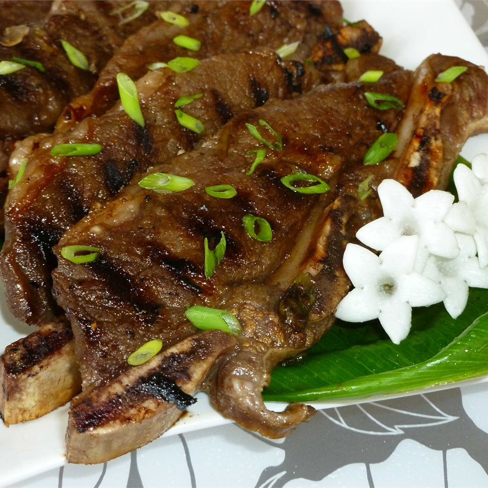

Kalbi

Description
Kalbi, also known as Korean BBQ Short Ribs, is a staple of Korean fine dining but is often to expensive in restaurants. It is simple to make at home and will leave you and your guests wanting more. Its traditionally served sliced, rolled in romaine lettuce leaves with white rice, lightly browned garlic slices, and gochujang. (Korean red pepper paste)
Ingredients
3/4 cup soy sauce
3/4 cup brown sugar
3/4 cup water
2 green onions, chopped
1 garlic clove, minced
1 tablespoon Asian (toasted) sesame oil
2 pounds Korean-style short ribs (beef chuck flank, cut 1/3 to 1/2 inch thick across bones
Steps
- Stir together soy sauce, brown sugar, water, green onions, garlic, and sesame oil in a bowl until sugar has dissolved.
- Place ribs in a large resealable plastic bag. Pour marinade over ribs. Seal the bag and refrigerate for 3 hours to overnight.
- Prehead an outdoor grill for medium-high heat; lightly oil the grate
- Remove ribs from the bag; shake off excess marinade and discard marinade. Grill ribs on preheated grill until meat is still pink but not bloody nearest the bone, 5 to 7 minutes per side./li>